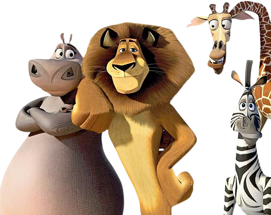

- Inspirado em um documentário: O conceito inicial para "Madagascar" surgiu após os diretores assistirem a um documentário sobre zoológicos e se perguntarem como seria a vida dos animais se eles fossem soltos na natureza.
- Dubladores famosos: O filme conta com um elenco de dublagem de estrelas, incluindo Ben Stiller (Alex), Chris Rock (Marty), David Schwimmer (Melman) e Jada Pinkett Smith (Gloria).
- Referências culturais: O filme inclui várias referências culturais, como o leão Alex imitando a icônica cena de "O Rei Leão" da Disney, quando ele é apresentado aos outros animais.
- Trilha sonora: A trilha sonora de "Madagascar" apresenta várias músicas conhecidas, incluindo "I Like to Move It, Move It" de Reel 2 Real, que se tornou um grande sucesso após o lançamento do filme.
- Animais realistas: Os animais no filme foram projetados para se assemelhar aos seus homólogos reais, com exceção de alguns exageros para efeitos cômicos.